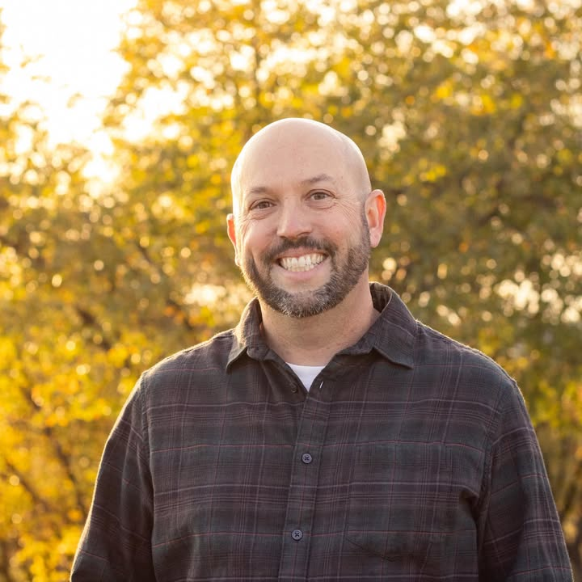
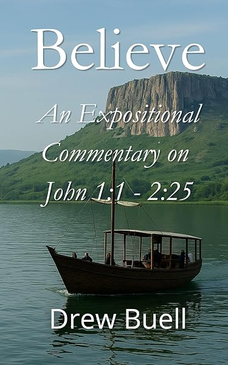
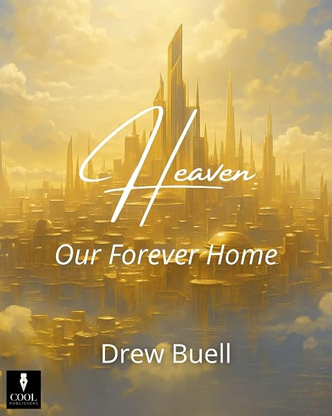
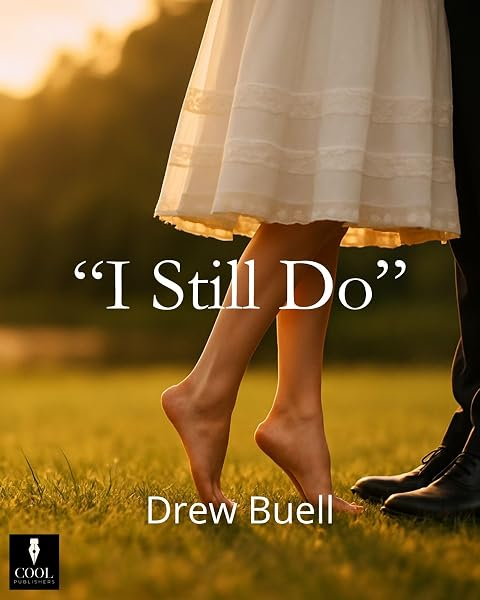
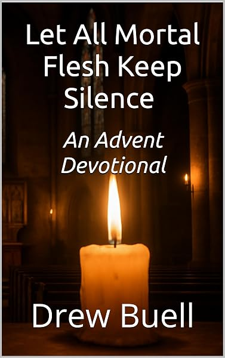
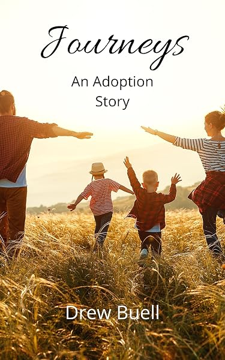
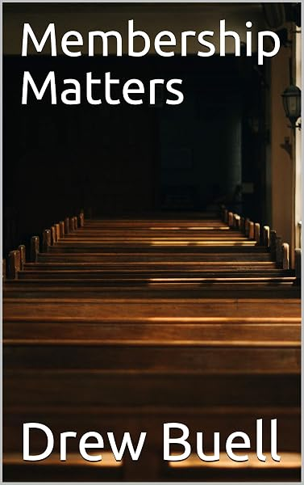

Blog · From Pastor Drew
Read, watch and keep growing.
Dr. Drew Buell has served as Pastor-Teacher of Cool Community Church since 2010. Between Sundays he writes on Substack, shares sermons on YouTube, and publishes books through Cool Publishers.

Substack
Essays & devotionals
Short reflections on Scripture and the Christian life, including his current series through Colossians, The Preeminence of Christ.
Jump to essays ↓YouTube
Sermons on video
Watch messages from the pulpit, including the full Gospel of John series, Believe.
Jump to sermons ↓Cool Publishers
Books
Nine books in print, most of them first preached at Cool Community Church, plus news on what he's writing next.
Jump to books ↓Stories
Our church family
Members, elders and staff share how God has worked in their lives.
Jump to stories ↓Substack
Get new essays by email
Subscribe for free and Pastor Drew's newest essays will arrive in your inbox as they're published. You'll also hear first when each new book is released.
YouTube · The Gospel of John
Believe: sermons through John
Use the playlist button in the corner of the player to choose another sermon in the series.
Cool Publishers
Books by Pastor Drew
Every title is available on Amazon. Select a cover to see the book.

Believe…2026 · New Ten Words to Build Your Life On2026
Heaven: Our Forever Home2025
I Still Do2025
Let All Mortal Flesh Keep Silence2025 · Advent A Christmas Carol: Reader's Edition2022
Journeys: An Adoption Story2022 We Are Not Descended from Fearful Men2021
Membership Matters2019Stories from our church family
How God has worked in our lives
Members, elders and staff share how they came to know Christ and what He has done in their lives.
Reid Harmon
I was brought up in a household in which my mother’s side of the family were Roman Catholic and my father’s side of the family were all...
Read story →Andy Fisher
Andy grew up in the Auburn area in a faithful Christian home. Although he spent much of his teen years running from Christ, the Lord...
Read story →Gary Farnworth: Renewing Elder
It has been a privilege and a blessing to serve as an Elder here at Cool Community Church. To be called to serve the Lord and the people...
Read story →Emily Lomas
Hey church! My name is Emily Lomas. I’m 29 years old. I was born in Hawaii, and raised in the little beach town of Santa Cruz. It was an...
Read story →Bob Akin
Barb and I were both raised in the Placerville area where we also raised our daughter, two sons and now enjoy our eight grandchildren. I...
Read story →Tony Larich
When I was a kid growing up in LA, we went to the First Baptist Church of Van Nuys. This is where I first heard the Gospel, in our Sunday...
Read story →Ross Gilleland
Hello Church! My name is Ross Gilleland and I have been leading worship since 1996. I grew up in Sacramento, where I met my beautiful...
Read story →Drew Lomas
I did not grow up in the church and lived a typical unbelieving teenage life. However, I did always believe that there was a God, I just...
Read story →Tom Grady
I was raised catholic and attended parochial school through 5th grade, Catholicism taught me reverence for God and a strong sense of...
Read story →Don Bazinet
I first professed faith in Christ and was baptized as a young teenager, having heard the Gospel at a private Christian school I attended...
Read story →Jeff Parkhurst
I accepted Christ at the age of 8 during vacation bible school at the Dixon Neighborhood Church in Dixon, CA. At the time, I remember...
Read story →Drew Buell
The first time I gave my testimony was my freshman year of High School on a Mexico Mission trip. I still remember standing in front of a...
Read story →Steven Heinbach
There are certain rights of passage that I've had in this lifetime; some of greater impact than others. There is the most meaningful...
Read story →Mike Denton
I was baptized Catholic as a baby and grew up in the Catholic Church, although my family did attend the Methodist Church for a few years...
Read story →Dave Robertson
Growing up in the 1950's & 60's, I attended the tirst Methodist church in Bulringame on the San Francisco peninsula. My mother was raised...
Read story →Gary Farnworth
I was born into a devout Mormon family. Growing up my entire life evolved around my family and church. All my friends and activities were...
Read story →Tyson Steward
I've had the blessing of growing up in Christian home, and my parents are first generation believers. From the age of 4 years old I...
Read story →